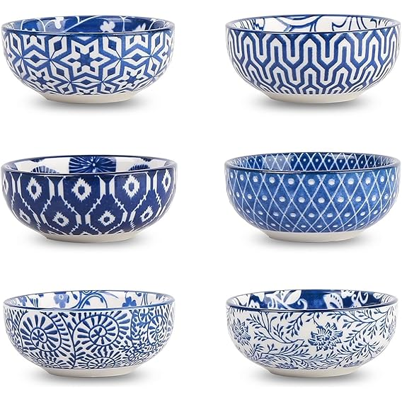
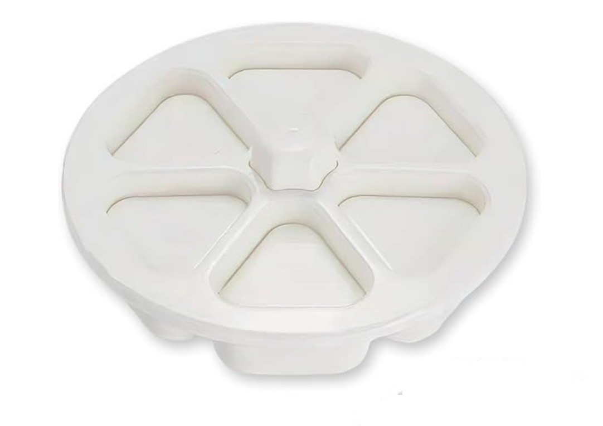
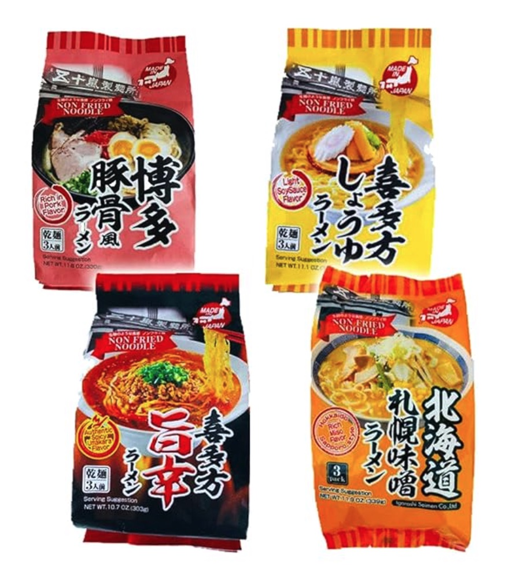
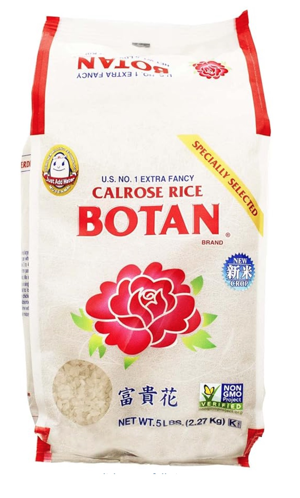
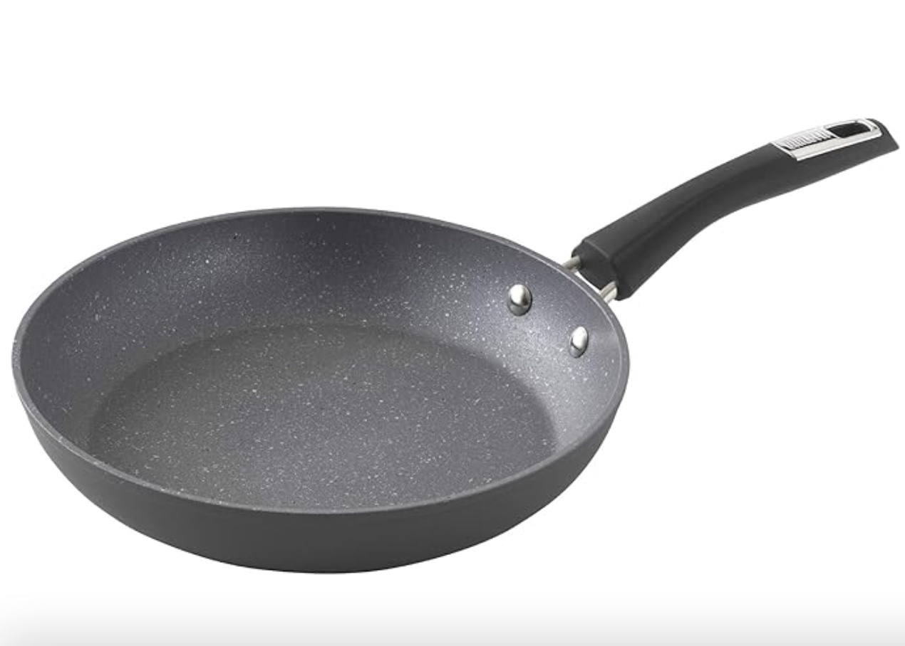

Selamica Mini Ceramic Dipping Bowls (Set of 6)
I use these little bowls all the time for soy sauce, small sides, pickles, and snacks. The vintage blue pattern adds a cozy touch to the table without taking up much space.
Onigiri Mold Set (6-Piece)
This simple mold makes perfect onigiri every time — quick, even shapes without sticky hands. Great for lunches, snacks, and meal prep.
VEGAN RAMEN Variety Pack – 4 Flavors (Soy Sauce, Umakara, Miso, Tonkotsu)
This delicious authentic vegan ramen set comes in four different flavors and serves 12. Order it today!
Calrose Rice Botan - 5 Lb
I use this rice frequently when I make onigiri or sushi sets. It's quite delicious. Order a pack today!
Bialetti Impact Textured Nonstick Oven-Safe 10in Frying Pan
I use this pan frequently because it's light and easy to clean. Order one today!
Thank you for visiting Kiki's Kitchen Table. This page has the small tools and dishes you see in Kiki’s videos. Some links are affiliate links, which help our channel at no extra cost to you.
Affiliate Disclosure
As an Amazon Associate, we earn from qualifying purchases.